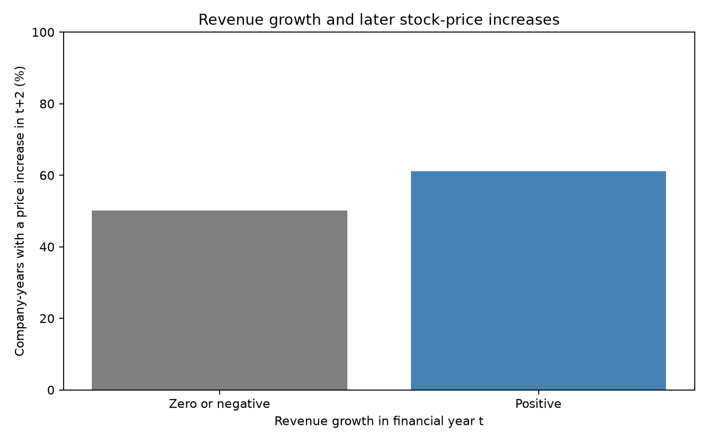
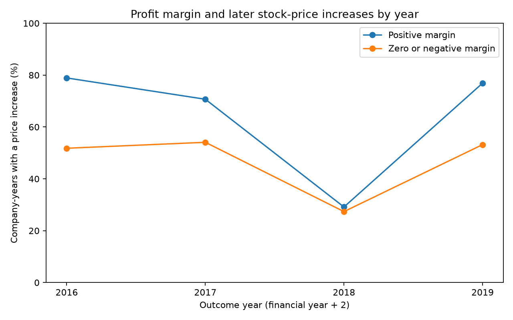

Research project
Do company finances relate to later price increases?
An exploratory comparison of revenue growth, profit margin, and annual stock-price direction.
Question and dataset
Among the companies in this dataset, are positive revenue growth and positive profit margins associated with a higher percentage of stock-price increases in calendar year t+2?
The project reuses the Kaggle API archive from the original analysis. It contains 22,077 original company-year records across five financial-year files. Matching financial years 2014–2017 with outcome years 2016–2019 leaves 17,063 records and 4,847 tickers. Each row represents one company-year. A full intervening year allows time for reports to appear, although exact publication dates and later revisions remain unknown.
The notebook documents every selected variable, missing-value count, cleaning decision, and limitation. Revenue growth is missing in 8.00% of retained rows; profit margin is missing in 10.50%.
What the comparisons show


Cleaning, ethics, and limitations
The pandas code trims ticker names, checks duplicate company-years, converts numeric fields, and leaves invalid ratios missing. It excludes 5,014 records without the required later outcome. Missing predictors are not replaced with zero; each chart excludes only the missing values it requires.
The dataset is a convenience sample. Delistings, missing firms, ticker changes, and the later-year match can favor surviving companies. Sector, company size, and shared market conditions are not controlled in these comparisons. Price adjustments and vendor measurement conventions are unverified. Four outcome years do not establish broad predictive reliability.
The API archive is cached to avoid unnecessary requests. No HTML scraping was used. Raw data is not bundled with this public-site draft; the notebook can obtain it from the original API source, subject to its access terms.
Code and full write-up
Download notebookDownload Python codeThe executed notebook includes the full research question, operational definitions, pandas cleaning, two visualizations, measured results, and ethics discussion. Open it in Jupyter or VS Code.
AI assistance disclosure: AI was used to find sources, help with a small part of the coding, and help with some of the writing in this project.
References
Fama, E. F., & French, K. R. (1992). The cross-section of expected stock returns. The Journal of Finance, 47(2), 427-465. https://doi.org/10.1111/j.1540-6261.1992.tb04398.x
Novy-Marx, R. (2013). The other side of value: The gross profitability premium. Journal of Financial Economics, 108(1), 1-28. https://doi.org/10.1016/j.jfineco.2013.01.003
Green, J., Hand, J. R. M., & Zhang, X. F. (2017). The characteristics that provide independent information about average stock returns. The Review of Financial Studies, 30(12), 4389-4436. https://doi.org/10.1093/rfs/hhx019
Banner attribution: McSalama. (2015). Abstract Blue Background [Image]. Wikimedia Commons, CC BY-SA 3.0. Source and license.
{kind=link}
Dataset reference
Carbone, N. (n.d.). 200+ financial indicators of US stocks (2014–2018) [Data set]. Kaggle. Dataset source.